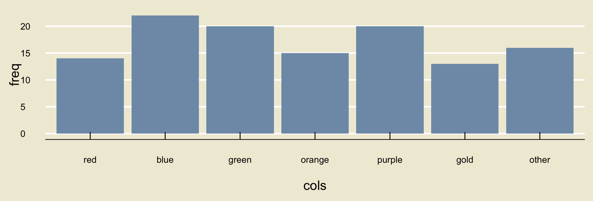
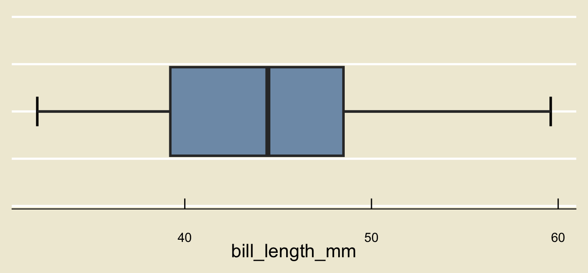

| species | island | bill_length_mm | bill_depth_mm | flipper_length_mm | body_mass_g | sex | year |
|---|---|---|---|---|---|---|---|
| Adelie | Torgersen | 39.1 | 18.7 | 181 | 3750 | male | 2007 |
| Adelie | Torgersen | 39.5 | 17.4 | 186 | 3800 | female | 2007 |
| Adelie | Torgersen | 40.3 | 18.0 | 195 | 3250 | female | 2007 |
| Adelie | Torgersen | NA | NA | NA | NA | NA | 2007 |
| Adelie | Torgersen | 36.7 | 19.3 | 193 | 3450 | female | 2007 |
| Adelie | Torgersen | 39.3 | 20.6 | 190 | 3650 | male | 2007 |
PSTAT 5A: Lecture 01
Descriptive Statistics, Part I
Annie Adams
2025-08-04
Data
What is Data?
- According to Merriam-Webster (source), there are three definitions for data:
factual information (such as measurements or statistics) used as a basis for reasoning, discussion, or calculation
information in digital form that can be transmitted or processed
information output by a sensing device or organ that includes both useful and irrelevant or redundant information and must be processed to be meaningful
- I like the first definition, mainly because of the phrase “used as a basis for reasoning, discussion, or calculation.”
Data, though incredibly useful, is not the be-all and end-all; rather, it should be viewed as a stepping stone for further discussion and/or analysis!
Over the span of this course, we will learn the skills of data literacy. Loosely speaking, “data literacy” refers to the ability to think critically about data, and to understand not only what it is saying but also the ways in which it can be manipulated to deceive.
Example of Data
As a concrete example of a dataset, let’s explore the
palmerpenguinsdataset.Collected by Dr. Kristen Gorman at the Palmer Station in Antarctica, this dataset contains various measurements of 344 different penguins Dr. Gorman encountered.
When using data, it is critical to know how the data was collected and how each column (or variable is defined).
- Notice that our data is formatted as a table. This table is what data scientists refer to as the data matrix or data frame.
The Data Matrix
Each row of the data matrix above corresponds to an individual penguin.
- In general, we refer to a given row of the data matrix as an observational unit, or case.
For each penguin, we can see that there are observations on several different characteristics; specifically, for each penguin she encountered, Dr. Gorman measured and recorded the penguin’s species, island, bill length (in mm), bill depth (in mm), flipper length (in mm), body mass (in grams), sex, and year of observation.
- Notice that these are the column names in our data matrix above. In general, the columns of the data matrix are referred to as variables.
- So, to summarize, each row of the data matrix corresponds to a unique observational unit, and each column corresponds to a unique variable.
Now, it will not always be immediately obvious what each variable in a dataset represents.
- As Data Scientists, it is absolutely crucial that we understand our data as best as possible before embarking on any analyses, explorations, etc.
As such, most datasets come equipped with a so-called data dictionary, or metadata, which lists the variables included in the dataset as well as a brief description of each variable.
- For example, the data dictionary for the
palmerpenguinsdataset might be formatted as:
| Variable | Description |
|---|---|
species |
The species of penguin (either Adelie, Chinstrap, or Gentoo) |
island |
The island on which the penguin was found (either Biscoe, Dream, or Torgersen) |
bill_length_mm |
The length (millimeters) of the penguin’s bill |
bill_depth_mm |
The depth (in millimeters) of the penguin’s bill |
flipper_length_mm |
The length (in millimeters) of the penguin’s flipper |
body_mass_g |
The mass (in grams) of the penguin |
sex |
The sex of the penguin (either Male or Female) |
year |
The year in which the penguin was observed |
- So, to summarize, the data matrix of the
palmerpenguinsdataset consists of 344 observational units on 8 different variables.
If we look at the different variables contained in the
palmerpenguinsdataset, we can see some qualitative differences.For instance, the observations of
speciesare all words/phrases whereas the observations ofbill_length_mmare numbers.This leads us to an important remark: there are different kinds of variables! Let’s talk about how to classify these different types.
Classifying Variables
Numerical vs. Categorical
Numerical variables are variables whose observations consist of numbers.
- Examples: heights, temperatures, number of free throws, etc.
Not all variables are numerical. For example, I could take a poll asking people’s opinions on the movie Dune 2- the observations of this variable will most certainly not be numerical.
Rather, the observations of this variable will fall into one of a series of fixed categories (e.g. “Enjoyed the movie”, “Neutral about the movie”, “Too much sand”, etc.).
As such, we describe non-numerical variables as categorical variables.
A Note on Language
Question: can we say that data is numerical? Or, can we say we have “categorical data”?
Sure- if our data consists of just a single variable!
That is to say- the classification terms we learned (and will learn) can be used to describe data, provided our data contains only one variable.
The definition of data we are using (i.e. in the context of the data matrix) is that data is comprised of several variables. As such, we cannot simply take the classification of variables and apply that to the entire dataset (unless our dataset consists of only one variable).
- This may seem like a subtle point… and it is! I’m just pointing it out so you are aware of it.
Continuous vs. Discrete Variables
There is a way we can further subdivide numerical variables.
As an example, let us consider two different variables, both of which are numerical: heights, and number of accidents on a stretch of highway.
It is perfectly conceivable to observe a height of 5.15 feet, or 5.1302 feet, or 5.02391829 feet. In other words, there are an infinite number of possible heights between, say, 5 feet and 6 feet.
On the other hand, it doesn’t make sense to talk about “1.5 accidents” occurring on a stretch of highway; the number of accidents needs to be an integer.
Terminology
Continuous vs. Discrete Variables
If the possible values a numerical variable can take has “jumps”, then it is a discrete variable. Otherwise, it is a continuous variable.
So, for example, “height” is a continuous variable whereas “number of accidents” is a discrete variable.
- This is because a height measurement could be any positive number, whereas the number of accidents cannot be, say, 2.5; i.e. the possible values of the “number of accidents” has jumps at every positive integer value.

Artwork by Allison Horst
Ordinal vs. Nominal vs. Binary Variables
Just as there was a way to subdivide numerical variables, there is a way to further subdivide categorical variables as well.
As an example, consider the following two categorical variables: color, and letter grades (i.e. A, B+, etc.), and pass/fail status
Firstly, I hope you can see that all of these variables are indeed categorical: there are only a fixed set of values that “color” and “letter grade” and “pass/fail” can take, with nothing in between.
Now, clearly letter grades can be ordered: that is, an A is better than a B, which is better than a C, and so on and so forth. This makes letter grades an ordinal variable.
In contrast, “green” isnt inherently better than “red”, which isn’t inherently better than “grey”, and so on and so forth. This makes color a nominal variable.
Pass/fail status, while categorical, has only two possible values (pass or fail). This makes it a binary variable - a special case of nominal variables with exactly two categories.

Artwork by Allison Horst
Full Classification Scheme
- Here is a diagram of the full classification scheme:
Time for an Exercise!
Exercise 1
Classify each of the following variables as either discrete, continuous, ordinal, or nominal.
- The number of times a computer program returns an error
- The time it takes an experienced swimmer to complete 4 laps of a pool
- The favorite flavor of donut of a randomly selected person
- The months of the year, as written in MM format (e.g. “01” for “January”, “02” for “February”, etc.)
- The presence or absence of a species observation
Discuss with your neighbors!
Summarizing Data
Real-World Data Set
- Let’s return to the
palmerpenguinsdataset. - Specifically, let’s examine the
speciesvariable:
[1] Adelie Adelie Adelie Adelie Adelie Adelie Adelie
[8] Adelie Adelie Adelie Adelie Adelie Adelie Adelie
[15] Adelie Adelie Adelie Adelie Adelie Adelie Adelie
[22] Adelie Adelie Adelie Adelie Adelie Adelie Adelie
[29] Adelie Adelie Adelie Adelie Adelie Adelie Adelie
[36] Adelie Adelie Adelie Adelie Adelie Adelie Adelie
[43] Adelie Adelie Adelie Adelie Adelie Adelie Adelie
[50] Adelie Adelie Adelie Adelie Adelie Adelie Adelie
[57] Adelie Adelie Adelie Adelie Adelie Adelie Adelie
[64] Adelie Adelie Adelie Adelie Adelie Adelie Adelie
[71] Adelie Adelie Adelie Adelie Adelie Adelie Adelie
[78] Adelie Adelie Adelie Adelie Adelie Adelie Adelie
[85] Adelie Adelie Adelie Adelie Adelie Adelie Adelie
[92] Adelie Adelie Adelie Adelie Adelie Adelie Adelie
[99] Adelie Adelie Adelie Adelie Adelie Adelie Adelie
[106] Adelie Adelie Adelie Adelie Adelie Adelie Adelie
[113] Adelie Adelie Adelie Adelie Adelie Adelie Adelie
[120] Adelie Adelie Adelie Adelie Adelie Adelie Adelie
[127] Adelie Adelie Adelie Adelie Adelie Adelie Adelie
[134] Adelie Adelie Adelie Adelie Adelie Adelie Adelie
[141] Adelie Adelie Adelie Adelie Adelie Adelie Adelie
[148] Adelie Adelie Adelie Adelie Adelie Gentoo Gentoo
[155] Gentoo Gentoo Gentoo Gentoo Gentoo Gentoo Gentoo
[162] Gentoo Gentoo Gentoo Gentoo Gentoo Gentoo Gentoo
[169] Gentoo Gentoo Gentoo Gentoo Gentoo Gentoo Gentoo
[176] Gentoo Gentoo Gentoo Gentoo Gentoo Gentoo Gentoo
[183] Gentoo Gentoo Gentoo Gentoo Gentoo Gentoo Gentoo
[190] Gentoo Gentoo Gentoo Gentoo Gentoo Gentoo Gentoo
[197] Gentoo Gentoo Gentoo Gentoo Gentoo Gentoo Gentoo
[204] Gentoo Gentoo Gentoo Gentoo Gentoo Gentoo Gentoo
[211] Gentoo Gentoo Gentoo Gentoo Gentoo Gentoo Gentoo
[218] Gentoo Gentoo Gentoo Gentoo Gentoo Gentoo Gentoo
[225] Gentoo Gentoo Gentoo Gentoo Gentoo Gentoo Gentoo
[232] Gentoo Gentoo Gentoo Gentoo Gentoo Gentoo Gentoo
[239] Gentoo Gentoo Gentoo Gentoo Gentoo Gentoo Gentoo
[246] Gentoo Gentoo Gentoo Gentoo Gentoo Gentoo Gentoo
[253] Gentoo Gentoo Gentoo Gentoo Gentoo Gentoo Gentoo
[260] Gentoo Gentoo Gentoo Gentoo Gentoo Gentoo Gentoo
[267] Gentoo Gentoo Gentoo Gentoo Gentoo Gentoo Gentoo
[274] Gentoo Gentoo Gentoo Chinstrap Chinstrap Chinstrap Chinstrap
[281] Chinstrap Chinstrap Chinstrap Chinstrap Chinstrap Chinstrap Chinstrap
[288] Chinstrap Chinstrap Chinstrap Chinstrap Chinstrap Chinstrap Chinstrap
[295] Chinstrap Chinstrap Chinstrap Chinstrap Chinstrap Chinstrap Chinstrap
[302] Chinstrap Chinstrap Chinstrap Chinstrap Chinstrap Chinstrap Chinstrap
[309] Chinstrap Chinstrap Chinstrap Chinstrap Chinstrap Chinstrap Chinstrap
[316] Chinstrap Chinstrap Chinstrap Chinstrap Chinstrap Chinstrap Chinstrap
[323] Chinstrap Chinstrap Chinstrap Chinstrap Chinstrap Chinstrap Chinstrap
[330] Chinstrap Chinstrap Chinstrap Chinstrap Chinstrap Chinstrap Chinstrap
[337] Chinstrap Chinstrap Chinstrap Chinstrap Chinstrap Chinstrap Chinstrap
[344] Chinstrap
Levels: Adelie Chinstrap Gentoo- That’s a lot of information!
- Indeed, trying to draw conclusions about the data using the data in its entirety is often not a good idea.
- Rather, we would like to find different ways to summarize, or describe our data.
Descriptive Statistics
- This is the goal of Descriptive Statistics- to find different summarizing techniques to desribe the data.
There are two ways we can seek to summarize data: numerically (using numbers), and graphically.
Let’s start with the latter- that is, let’s discuss how we might summarize our data using graphs.
Graphical Summaries
Back To Penguins
- Here is the
speciesvariable one more time:
[1] Adelie Adelie Adelie Adelie Adelie Adelie Adelie
[8] Adelie Adelie Adelie Adelie Adelie Adelie Adelie
[15] Adelie Adelie Adelie Adelie Adelie Adelie Adelie
[22] Adelie Adelie Adelie Adelie Adelie Adelie Adelie
[29] Adelie Adelie Adelie Adelie Adelie Adelie Adelie
[36] Adelie Adelie Adelie Adelie Adelie Adelie Adelie
[43] Adelie Adelie Adelie Adelie Adelie Adelie Adelie
[50] Adelie Adelie Adelie Adelie Adelie Adelie Adelie
[57] Adelie Adelie Adelie Adelie Adelie Adelie Adelie
[64] Adelie Adelie Adelie Adelie Adelie Adelie Adelie
[71] Adelie Adelie Adelie Adelie Adelie Adelie Adelie
[78] Adelie Adelie Adelie Adelie Adelie Adelie Adelie
[85] Adelie Adelie Adelie Adelie Adelie Adelie Adelie
[92] Adelie Adelie Adelie Adelie Adelie Adelie Adelie
[99] Adelie Adelie Adelie Adelie Adelie Adelie Adelie
[106] Adelie Adelie Adelie Adelie Adelie Adelie Adelie
[113] Adelie Adelie Adelie Adelie Adelie Adelie Adelie
[120] Adelie Adelie Adelie Adelie Adelie Adelie Adelie
[127] Adelie Adelie Adelie Adelie Adelie Adelie Adelie
[134] Adelie Adelie Adelie Adelie Adelie Adelie Adelie
[141] Adelie Adelie Adelie Adelie Adelie Adelie Adelie
[148] Adelie Adelie Adelie Adelie Adelie Gentoo Gentoo
[155] Gentoo Gentoo Gentoo Gentoo Gentoo Gentoo Gentoo
[162] Gentoo Gentoo Gentoo Gentoo Gentoo Gentoo Gentoo
[169] Gentoo Gentoo Gentoo Gentoo Gentoo Gentoo Gentoo
[176] Gentoo Gentoo Gentoo Gentoo Gentoo Gentoo Gentoo
[183] Gentoo Gentoo Gentoo Gentoo Gentoo Gentoo Gentoo
[190] Gentoo Gentoo Gentoo Gentoo Gentoo Gentoo Gentoo
[197] Gentoo Gentoo Gentoo Gentoo Gentoo Gentoo Gentoo
[204] Gentoo Gentoo Gentoo Gentoo Gentoo Gentoo Gentoo
[211] Gentoo Gentoo Gentoo Gentoo Gentoo Gentoo Gentoo
[218] Gentoo Gentoo Gentoo Gentoo Gentoo Gentoo Gentoo
[225] Gentoo Gentoo Gentoo Gentoo Gentoo Gentoo Gentoo
[232] Gentoo Gentoo Gentoo Gentoo Gentoo Gentoo Gentoo
[239] Gentoo Gentoo Gentoo Gentoo Gentoo Gentoo Gentoo
[246] Gentoo Gentoo Gentoo Gentoo Gentoo Gentoo Gentoo
[253] Gentoo Gentoo Gentoo Gentoo Gentoo Gentoo Gentoo
[260] Gentoo Gentoo Gentoo Gentoo Gentoo Gentoo Gentoo
[267] Gentoo Gentoo Gentoo Gentoo Gentoo Gentoo Gentoo
[274] Gentoo Gentoo Gentoo Chinstrap Chinstrap Chinstrap Chinstrap
[281] Chinstrap Chinstrap Chinstrap Chinstrap Chinstrap Chinstrap Chinstrap
[288] Chinstrap Chinstrap Chinstrap Chinstrap Chinstrap Chinstrap Chinstrap
[295] Chinstrap Chinstrap Chinstrap Chinstrap Chinstrap Chinstrap Chinstrap
[302] Chinstrap Chinstrap Chinstrap Chinstrap Chinstrap Chinstrap Chinstrap
[309] Chinstrap Chinstrap Chinstrap Chinstrap Chinstrap Chinstrap Chinstrap
[316] Chinstrap Chinstrap Chinstrap Chinstrap Chinstrap Chinstrap Chinstrap
[323] Chinstrap Chinstrap Chinstrap Chinstrap Chinstrap Chinstrap Chinstrap
[330] Chinstrap Chinstrap Chinstrap Chinstrap Chinstrap Chinstrap Chinstrap
[337] Chinstrap Chinstrap Chinstrap Chinstrap Chinstrap Chinstrap Chinstrap
[344] Chinstrap
Levels: Adelie Chinstrap Gentoo- We see there are three distinct species present in the dataset: Adelie, Chinstrap, and Gentoo.
As such, one way we could summarize our data is by reporting how many penguins of each species were observed.
Using a computing software, finding these counts is relatively easy.
Adelie Chinstrap Gentoo
152 68 124 So, there were 152 Adelie penguins, 68 Chinstrap penguins, and 124 Gentoo penguins.
This kind of table is called a frequency table, and is a great way to summarize categorical data.
- Okay… but where’s the graph?
- Here’s an idea: let’s take our frequency table, and convert it to a graph.
- Specifically, let’s draw 3 boxes/rectangles, one for each species.
- Let’s make the height of each rectangle proportional to the corresponding frequency from our frequency table:
Bargraphs/Barplots
- This is an example of what is known as a bargraph or barplot.
Result
A bargraph is the best type of visualization for categorical data.
In general, if you have \(k\) categories, then you will have \(k\) bars in your bargraph, each with height propotional to the number of observations within the corresponding category.
As you can see, computing software is very useful when it comes to data visualization! In a few weeks, you will explore how to generate visualizations of your own in Python during Lab.
Time For Another Exercise!
Exercise 2
A recent survey asked 120 different PSTAT students what their favorite color is. The bargraph of the results is displayed below:

Approximately what proportion of the students in the sample reported either blue or gold as their favorite color? Discuss with your neighbor!
Leadup
- All of our discussions above were related to categorical variables.
As we discussed at the beginning of this lecture, not all variables are categorical- how do we visualize numerical variables?
Again, I find it useful to consider a concrete example: this time, let’s use the
bill_length_mmvariable from thepalmerpenguinsdataset.
[1] 39.1 39.5 40.3 NA 36.7 39.3 38.9 39.2 34.1 42.0 37.8 37.8 41.1 38.6 34.6
[16] 36.6 38.7 42.5 34.4 46.0 37.8 37.7 35.9 38.2 38.8 35.3 40.6 40.5 37.9 40.5
[31] 39.5 37.2 39.5 40.9 36.4 39.2 38.8 42.2 37.6 39.8 36.5 40.8 36.0 44.1 37.0
[46] 39.6 41.1 37.5 36.0 42.3 39.6 40.1 35.0 42.0 34.5 41.4 39.0 40.6 36.5 37.6
[61] 35.7 41.3 37.6 41.1 36.4 41.6 35.5 41.1 35.9 41.8 33.5 39.7 39.6 45.8 35.5
[76] 42.8 40.9 37.2 36.2 42.1 34.6 42.9 36.7 35.1 37.3 41.3 36.3 36.9 38.3 38.9
[91] 35.7 41.1 34.0 39.6 36.2 40.8 38.1 40.3 33.1 43.2 35.0 41.0 37.7 37.8 37.9
[106] 39.7 38.6 38.2 38.1 43.2 38.1 45.6 39.7 42.2 39.6 42.7 38.6 37.3 35.7 41.1
[121] 36.2 37.7 40.2 41.4 35.2 40.6 38.8 41.5 39.0 44.1 38.5 43.1 36.8 37.5 38.1
[136] 41.1 35.6 40.2 37.0 39.7 40.2 40.6 32.1 40.7 37.3 39.0 39.2 36.6 36.0 37.8
[151] 36.0 41.5 46.1 50.0 48.7 50.0 47.6 46.5 45.4 46.7 43.3 46.8 40.9 49.0 45.5
[166] 48.4 45.8 49.3 42.0 49.2 46.2 48.7 50.2 45.1 46.5 46.3 42.9 46.1 44.5 47.8
[181] 48.2 50.0 47.3 42.8 45.1 59.6 49.1 48.4 42.6 44.4 44.0 48.7 42.7 49.6 45.3
[196] 49.6 50.5 43.6 45.5 50.5 44.9 45.2 46.6 48.5 45.1 50.1 46.5 45.0 43.8 45.5
[211] 43.2 50.4 45.3 46.2 45.7 54.3 45.8 49.8 46.2 49.5 43.5 50.7 47.7 46.4 48.2
[226] 46.5 46.4 48.6 47.5 51.1 45.2 45.2 49.1 52.5 47.4 50.0 44.9 50.8 43.4 51.3
[241] 47.5 52.1 47.5 52.2 45.5 49.5 44.5 50.8 49.4 46.9 48.4 51.1 48.5 55.9 47.2
[256] 49.1 47.3 46.8 41.7 53.4 43.3 48.1 50.5 49.8 43.5 51.5 46.2 55.1 44.5 48.8
[271] 47.2 NA 46.8 50.4 45.2 49.9 46.5 50.0 51.3 45.4 52.7 45.2 46.1 51.3 46.0
[286] 51.3 46.6 51.7 47.0 52.0 45.9 50.5 50.3 58.0 46.4 49.2 42.4 48.5 43.2 50.6
[301] 46.7 52.0 50.5 49.5 46.4 52.8 40.9 54.2 42.5 51.0 49.7 47.5 47.6 52.0 46.9
[316] 53.5 49.0 46.2 50.9 45.5 50.9 50.8 50.1 49.0 51.5 49.8 48.1 51.4 45.7 50.7
[331] 42.5 52.2 45.2 49.3 50.2 45.6 51.9 46.8 45.7 55.8 43.5 49.6 50.8 50.2- In some ways, this is an even bigger mess than the
speciesvariable- look at all those decimals!
Because this variable is continuous, we intuitively know that it’s highly unlikely to have 2 or more observations that are the same.
- In other words, the chances of finding two different penguins with exactly the same bill length, down to the decimal, is highly unlikely.
As such, we cannot construct a frequency table like we did with our categorical variable from before.
But, here’s a thought: there are probably multiple penguins that have bill lengths between, say, 30 and 35 mm. Similarly, there are probably multiple penguins that have bill lengths between 35 and 40 mm.
So, what if we viewed our continuous variable as being, in a sense, categorical, with categories “between 30 and 35”, “between 35 and 40”, etc.?
Discretization/Binning
- This is what is known as discretizing or binning our variable.
In other words, when we discretize our data, we carve it up into a bunch of chunks of equal width and see how many observations fall in each chunk.
- The width of each chunk is what we call the binwidth. For example, if my categories are “between 30 and 35”, “between 35 and 40”, etc., then the binwidth is 5mm as each category spans a width of 5mm.
- Using a binwidth of 5, here is what our
bill_length_mmvariable becomes:
[30, 35] (35, 40] (40, 45] (45, 50] (50, 55] (55, 60]
11 89 77 113 47 5 So, for example, there were 11 penguins with bill lengths between 30 and 35mm, 89 between 35 and 40, and so on and so forth.
By the way, I am using interval notation in the bin names above. So, when we write \((35, 40]\) we mean all numbers between 35 and 40, including 35 but excluding 40.
The reason for this is that if a datapoint falls on the boundary of a bin, we conventionally assign it to the left (lower) bin.
If you are not familiar with interval notation, I have posted some supplementary materials to the website.
- We’re almost ready for our graph!
First, however, note that the table on the previous slide isn’t really the same thing as the frequency table we saw when exploring the
speciesvariable.- Largely, this is due to the fact that different binwidths lead to different tables!
As such, we will refer to this type of table (i.e. the frequencies after binning a continuous variable) as a distribution table.
With this terminology in mind, we can use the distribution table much in the same way we used the frequency table to construct a graph- i.e. we will draw as many rectangles as there are bins, and have the height of each rectangle proportional to the corresponding frequency in the distribution table.

- This type of plot is called a histogram.
Result
A histogram is the best type of visualization for continuous variables.
- By the way, you can still construct histograms for discrete variables as well! In the case of a discrete variable, however, we don’t really need to bin our data, because if our data can only take a fixed number of values then it is likely we will have multiple observations of any particular value.
The Importance of Binwidth
Notice that our notion of a histogram is intimately tied with our choice of binwidth.
Different binwidths can produce wildly different histograms!
Here is a demo
In practice, it is a good idea to play around with different binwidths to find one that results in a histogram that displays a moderate amount of detail without becoming so detailed as to lose sight of the bigger picture.
Exercise 3
Consider the following histogram of the length of flippers in the palmerpenguins dataset:
- What binwidth was used to generate the above histogram?
- What proportion of penguins had flippers between 190 and 210 mm long? (Remember there were 344 penguins included in the dataset)
Discuss with your neighbors!
Boxplots
It turns out there is another way to summarize numerical data visually: using what is known as a boxplot.
Boxplots can be a seem a bit peculiar at first, so let’s take a look at one together. Before diving back into the
palmerpenguinsdataset, let’s look at a slightly different dataset.- This dataset contains only one variable, which records the scores (out of 100 points) of 140 different students on a final exam.
[1] 88.236 77.348 81.050 74.431 75.083 79.569 74.998 80.099 74.264 83.850
[11] 89.857 81.427 79.439 84.260 78.565 77.570 78.224 73.780 88.085 79.341
[21] 80.554 77.317 81.155 83.842 87.051 78.362 81.528 72.148 74.131 78.927
[31] 75.446 79.791 78.199 90.769 85.640 78.420 83.484 79.045 97.909 86.736
[41] 73.723 76.973 81.320 79.238 85.803 86.621 85.781 81.844 82.896 80.478
[51] 75.903 84.565 76.302 83.432 85.448 69.695 81.049 85.575 84.791 82.525
[61] 78.361 77.803 86.542 84.171 86.103 72.772 78.730 76.189 75.187 79.194
[71] 77.159 82.048 82.661 84.021 76.008 79.474 79.015 86.992 72.524 76.094
[81] 78.765 80.623 82.497 75.776 70.614 79.677 81.182 77.943 76.863 85.561
[91] 89.569 96.695 73.680 77.770 81.584 81.965 78.373 76.295 73.212 79.229
[101] 87.273 87.364 82.706 83.843 75.864 82.791 82.637 78.685 72.626 69.302
[111] 93.408 73.189 83.764 77.832 82.803 80.278 94.962 79.616 85.667 82.710
[121] 86.823 76.656 74.623 71.508 91.131 78.318 81.058 86.239 76.585 85.652
[131] 77.122 86.036 83.127 83.234 80.746 83.878 75.544 73.780 81.106 85.523- Here is a histogram of these scores…
- … and here is a boxplot
Anatomy of a Boxplot
Understanding Boxplots
Let’s discuss each of the quantities represented on the boxplot separately.
Before we do, there’s a bit of math we need to cover.
The first quantity we will define is a term you may have heard before- percentile.
Let’s return to our histogram of scores (since we’re a bit more comfortable with reading histograms than boxplots, at this point)

Now, consider the score of a hypothetical student called Mindy. Suppose Mindy received a score of 90% on this exam.
Based on the histogram, we can see that over half (50%) of students in the class received a score lower than Mindy’s 90%.
Upon examining the data more closely, we can see that 95.71% of the class received a score lower than Mindy’s.
We would therefore say that Mindy’s score - i.e. 90% - is at the 95.71th percentile of exam scores.
Percentiles
Definition
The pth percentile of a set of observations \(X\) is the value \(\pi_{x, \ 0.5}\) such that p% of observations lie to the left of (i.e. are less than) \(\pi_{x, \ p}\).
Maybe now you can see why I switched over to this data of scores- I think percentiles are sometimes easier to interpret in the context of exam scores, since they are very commonly reported with standardized testing scores (e.g. SAT, GRE, etc.)
- In the context of scores: someone who scored at the pth percentile performed better than p% of all test-takers.
Quartiles
We give a special name to the 25th and 75th percentiles of a set of observations- we call these the first quartile and third quartile, respectively, and use the notation \(Q_1\) and \(Q_3\) to denote them, respectively.
- So, \(Q_1\) is the value such that 25% of observations are less than \(Q_1\), and \(Q_3\) is the value such that 75% of observations are less than \(Q_3\)
The second quartile (i.e. the 50th percentile) is called the median.
As such, the median is the value that “splits the data in half”.
We’ll talk more about the median in the next lecture.
Small Caveat
I should quickly mention one small caveat- computing softwares often use a different procedure for computing quartiles.
This procedure is quite long and complicated, and is based off an entire paper written back in the 90’s.
For example, if we consider the set \(S = \{1, 2, 3, 4, 5, 6\}\), we would (based on the definition from the previous slide) call the first quartile \(2\), whereas most softwares would return a value of \(2.25\).
Don’t worry about why this is- whenever we talk about quartiles in this class, you can just think of the definition I posed on the previous slide.
Whiskers
Finally, we discuss the role of the whiskers on the boxplot.
There are several different conventions for how far the whiskers extend. In some conventions, the whiskers extend to the minimum and maximum values of the data.
The convention we will use is the following: the whiskers will never reach farther than \(\boldsymbol{1.5 \times (Q_3 - Q_1)}\).
- What this means is that there may be points in our dataset that lie beyond the reach of the whiskers. These points are what we call outliers.
Whiskers
- The rationale for constructing the whiskers in this way is to try and highlight any points that are unusually distant from the rest of the data.
- For example, returning to our dataset of scores, we can see that though the median score was around 80.3% there was one person who scored a 97.9%. Because this score is unusually large, we would label it an outlier.
Time for an Exercise!
Exercise 4
Here is a boxplot of the bill_length_mm variable from the palmerpenguins dataset:

- What is the median bill length?
- Approximately what percent of penguins had bills shorter than 37mm in length?
- Are there any outliers?
Lecture Summary
Summary
We started off by talking about the structure of data, and the data matrix.
We then discussed how to classify variables.
Next, we explored graphical methods for summarizing data.
Bargraphs are best-suited for categorical data
Histograms and boxplots are best-suited for numerical data
We also introduced the notions of percentiles, the median, and outliers.
Next time we’ll discuss how to visualize the relationship between two variables.
We’ll also discuss some numerical summaries for data, including the mean, median, standard deviation, and IQR.